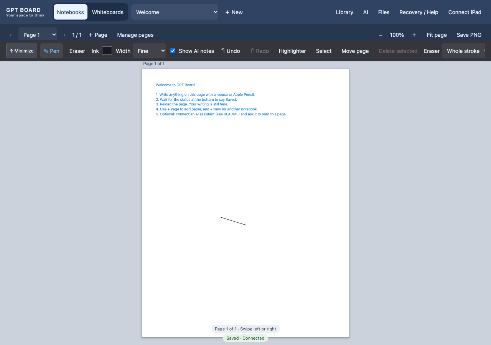
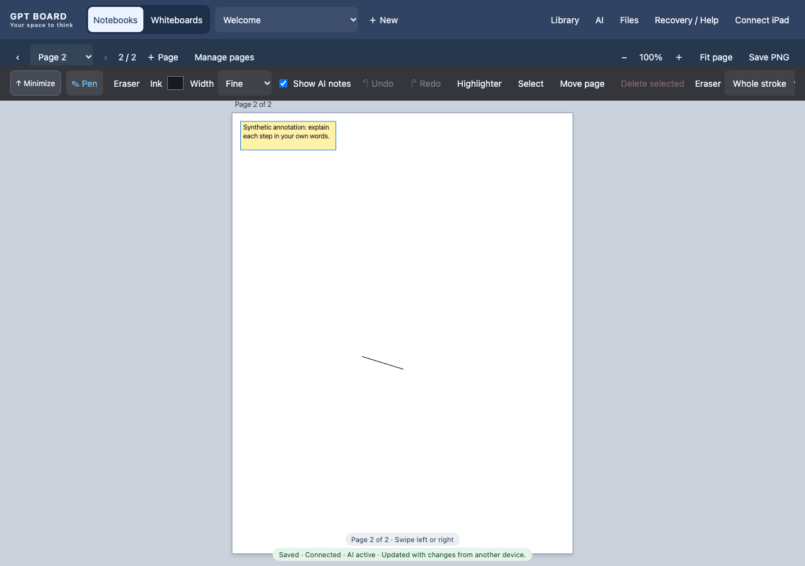
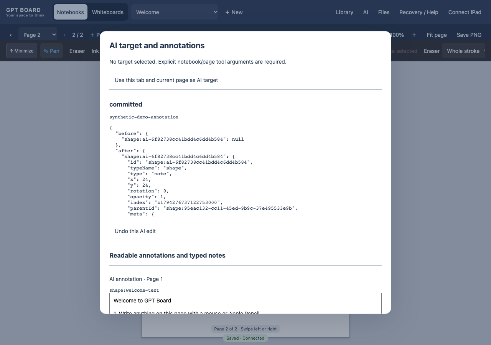
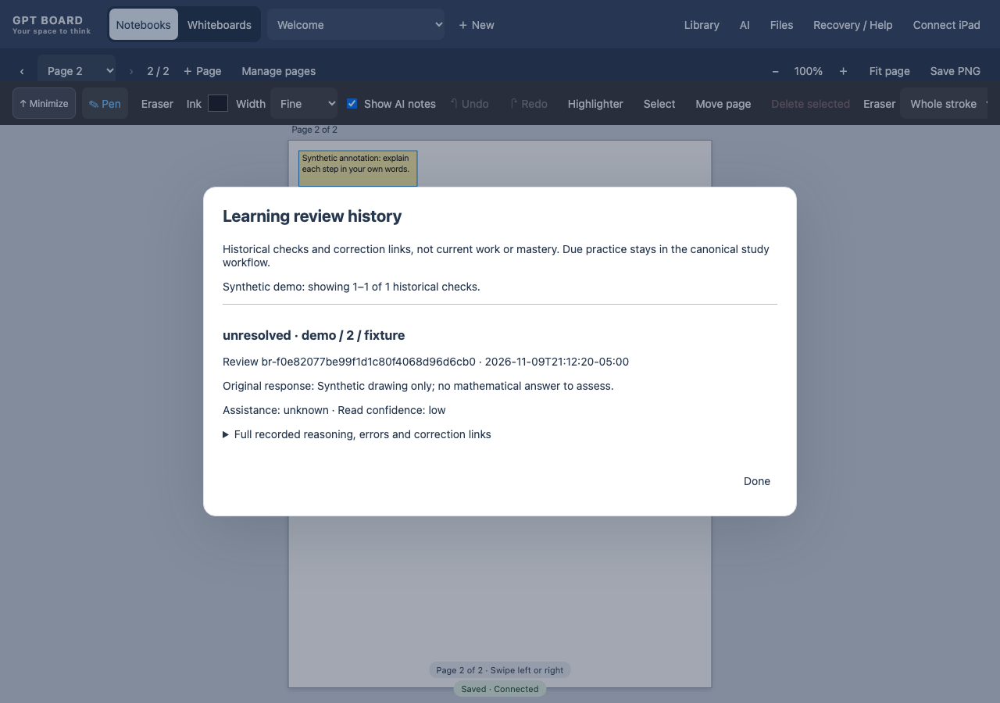

Original synthetic material in an isolated installation. The annotation client is simulated; the app and recorded controller receipt are real. No personal notebook or learning record was used.
Download video or captions. If local caption loading is restricted, use the captioned figures below.




Physical device checks and Antonio's personal contribution confirmation remain open.